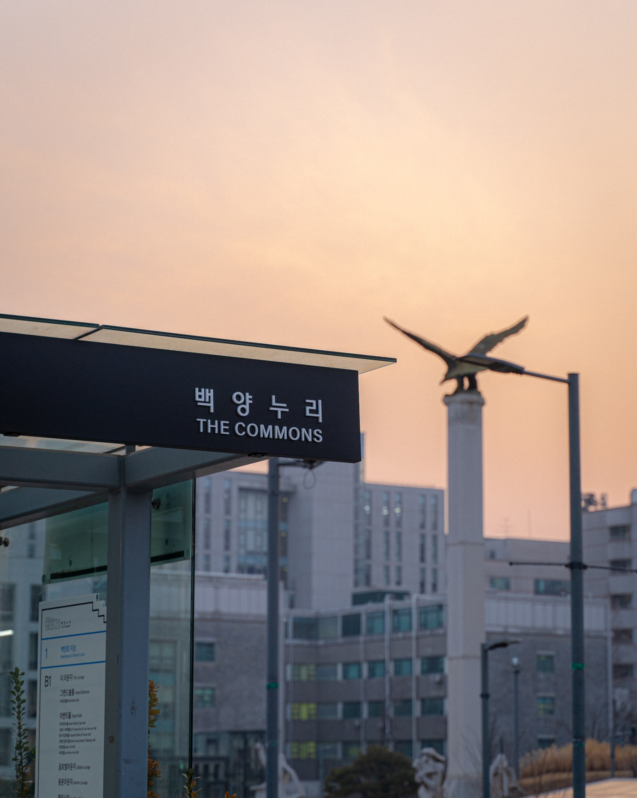
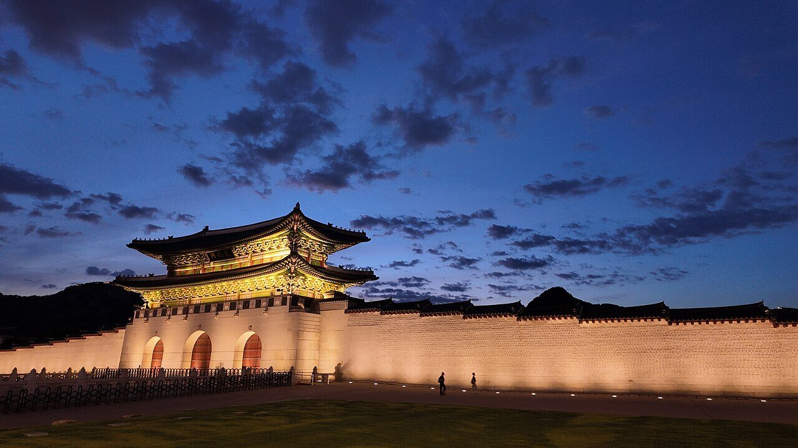
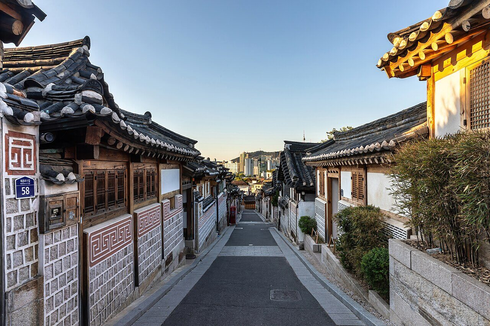
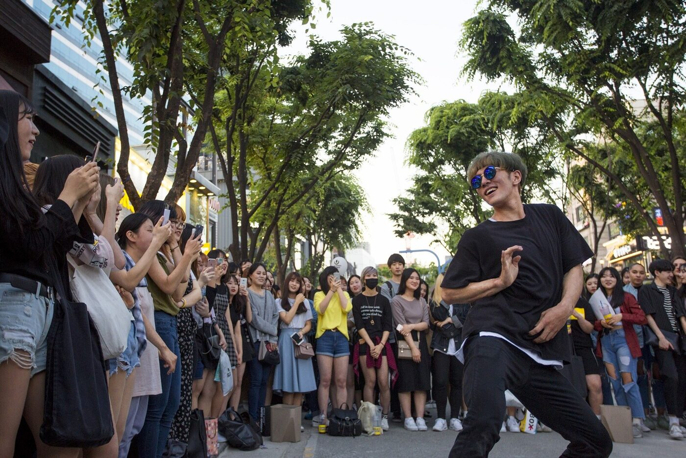
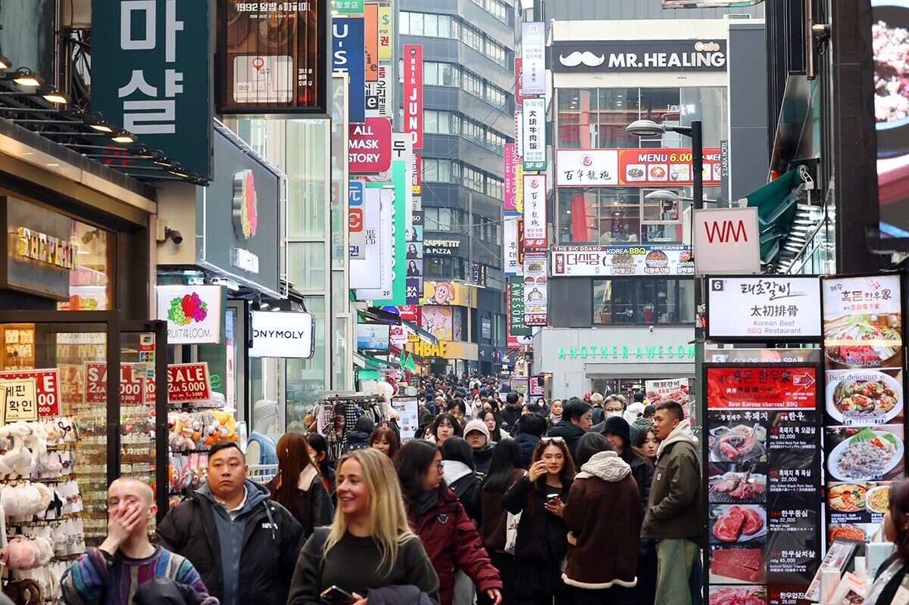
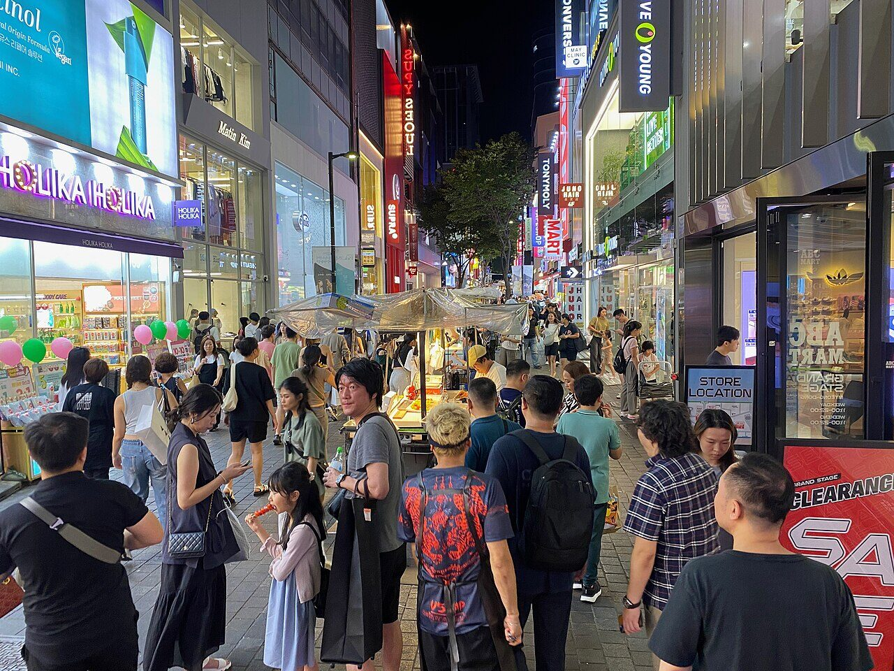
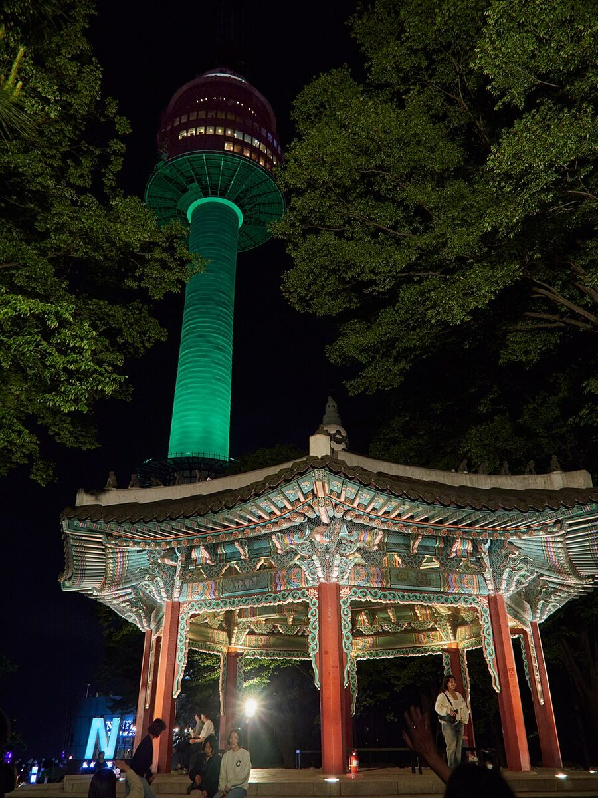
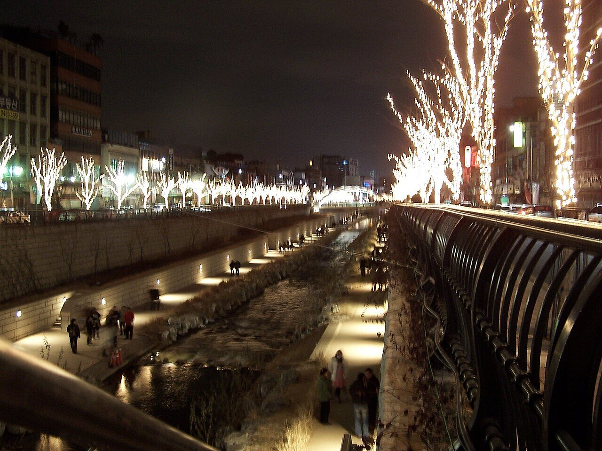
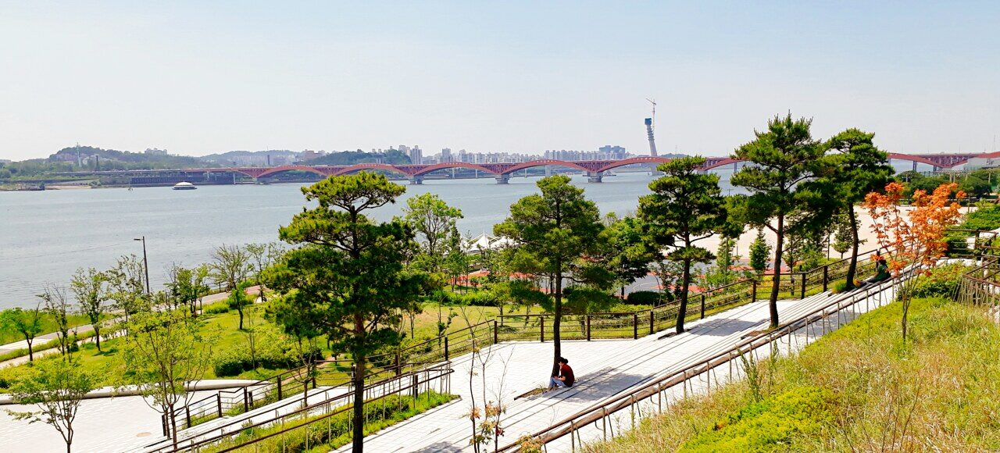

4.9Google · 106 reviews
Myeongmul Hwaro
1F, 71 Myeongmul-gil, Seodaemun-gu, Seoul
Open in Google Maps ↗Venue
Yonsei University · 50 Yonsei-ro, Seodaemun-gu, Seoul 03722, Republic of Korea

Step-by-step directions from Incheon International Airport by limousine bus, AREX train, and taxi — plus practical tips for getting around Seoul.
View Directions →Official entry-resource links for the Republic of Korea, plus guidance on requesting a visa-support invitation letter from the organizing committee.
Visa Information →Around the venue
Nearby options from the conference logistics guide. Prices are shown per person and may change; check the linked map for current hours. Ratings were checked on September 1, 2026 and link to their public source.
1F, 71 Myeongmul-gil, Seodaemun-gu, Seoul
Open in Google Maps ↗1F, 7 Yonsei-ro 4-gil, Seodaemun-gu, Seoul
Open in Google Maps ↗13 Yonsei-ro 11-gil, Seodaemun-gu, Seoul
Open in Google Maps ↗1F, 27-9 Myeongmul-gil, Seodaemun-gu, Seoul
Open in Google Maps ↗37-4 Yonsei-ro 12-gil, Seodaemun-gu, Seoul
Open in Google Maps ↗4F, 94 Sinchon-ro, Mapo-gu, Seoul
Open in Google Maps ↗28 Myeongmul-gil, Seodaemun-gu, Seoul
Open in Google Maps ↗87 World Cup buk-ro 4-gil, Mapo-gu, Seoul
Open in Google Maps ↗Explore Seoul from Sinchon
Step out of the lecture hall and into Seoul. Start locally with the cafés and street culture of Hongdae and Yeonnam, unwind beside the river at Mangwon Hangang Park, or head downtown for royal heritage, traditional neighborhoods, street food, and illuminated city walks.

Royal architecture, museums, open city squares, and memorable hanbok experiences.
Open in Google Maps ↗
Hanok-lined lanes, galleries, traditional crafts, tea houses, and an easy half-day cultural walk.
Open in Google Maps ↗

Indie culture, cafés, street performances, creative shops, and late-night dining—just one subway stop from Sinchon.
Open in Google Maps ↗

Street food, K-beauty, shopping, and one of Seoul’s most recognizable panoramic night views.
Open in Google Maps ↗
A relaxed downtown walk through city lights, cafés, and historic neighborhoods. Pair it with Gwanghwamun and a local dinner.
Open in Google Maps ↗
Wide lawns, river paths, picnics, and open views—an easy, refreshing extension of a Hongdae or Yeonnam evening.
Open in Google Maps ↗ Sinchon’s closest riverside retreatTravel times are approximate from the Yonsei University/Sinchon area and may vary by route, traffic, and time of day.
After the sessions
Four simple routes designed around a conference schedule—no complicated planning required.
Ideal for the first evening: dinner, cafés, street culture, and a relaxed walk back toward Sinchon.
Pair youthful street culture with local food, a riverside walk, and a relaxed sunset picnic by the Han River.
Royal history, hanok lanes, galleries, crafts, and tea houses in one walkable downtown route.
Choose panoramic city views or a relaxed illuminated stream walk, then finish with a late dinner.